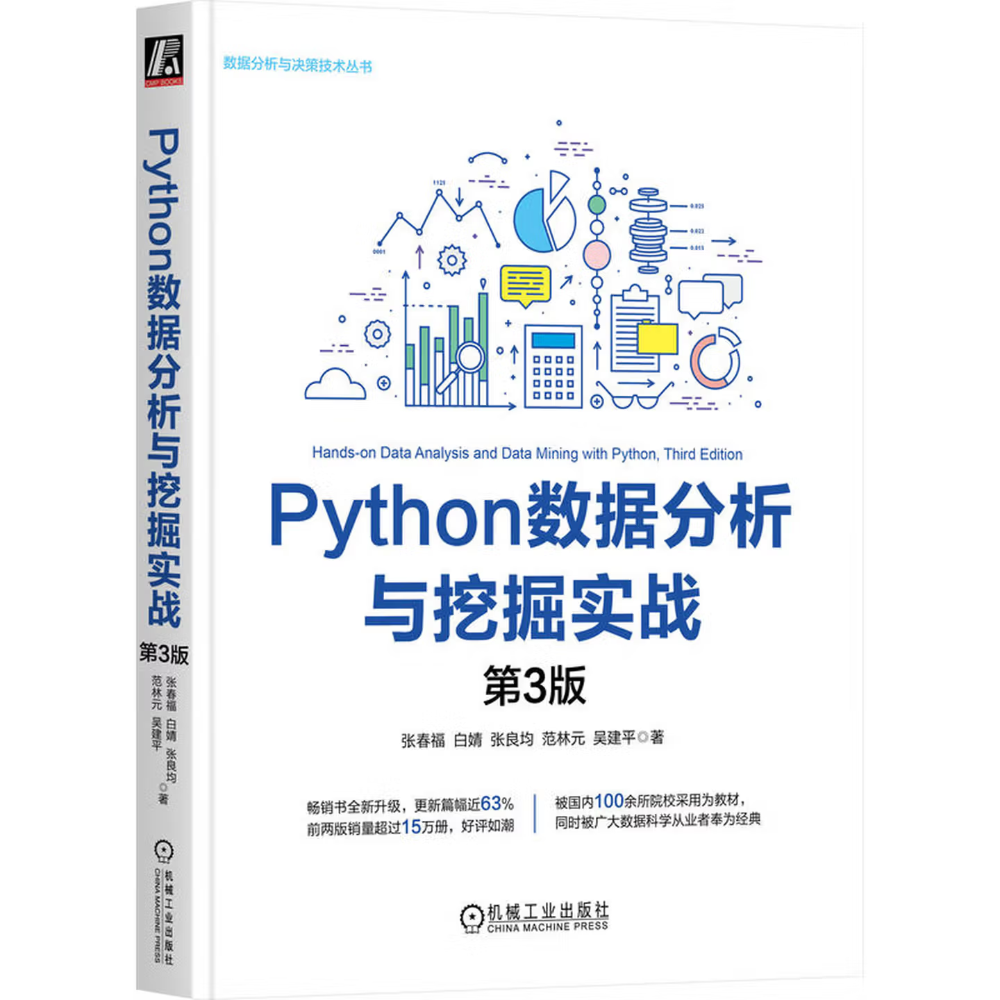
About Me
I am currently an Associate Researcher at the Shandong Computing Science Center (National Supercomputer Center), Qilu
University (Shandong Academy of Sciences).
I received my Ph.D. degree in Computer Applications Technology from Tianjin University in 2019.
I have published more than 50 papers,
including CCF-ranking A/B conference papers (e.g., ECML-PKDD, DASFAA, EMNLP, BIBM, ICASSP)
and top journal papers (e.g., ACM CSUR, INFFUS, NN).
李响.....简介
Work Experience
2019/08-now, 齐鲁工业大学（山东省科学院）, 计算学部，山东省计算中心（国家超级计算济南中心）, 副研究员.
2014/09-2019/06, 天津大学, 智算学部, 博士
Research Interests
Large Language Model(大模型), Neuro-Physiological Computing：EEG，PPG, etc (神经生理计算) Affective Computing(情感计算), Time Series Mining：Prediction, Anomaly Detection, Imputation, Classfication, etc (时序数据挖掘: 预测，异常检测，数据填补，分类等）， Marine Information Intelligent Computing (海洋信息智能计算)
常见问题——关于研究生培养
Q1:
Push吗？
R1: 不push,
尊重学生想法，希望学生主观努力且尽力，如果这个算Pussh，那么就是Push。
Q2:
有没有早晚打卡？
R2: 没有。
Q3:
实验室能不能打游戏？
R3:
不鼓励不排斥。
Q4:
什么培养模式？
R4:
重视提升学生在知识获取和实验上的主观能动性，在学生遇到问题时候及时介入讨论，愿意与学生共同学习，共同攻关，所以会对学生的科研工作细节较为了解。
Q5:
需要什么类型的学生？
R5:
最好是带我发CNS的，不局限以C会为毕业追求的学生，起码得带着个B会或者2区论文走吧，毕竟我带的本科生都发了CCF-B类会议了。
Q6:
研三能不能实习？
R6:
研三前取得科研成绩，研三放人毫无问题。目前还没有卡研三的情况，因为都在研三前达到培养预期了。
Recent Activities
- 《EEG based Emotion Recognition: A Tutorial and Review》入选ESI高被引论文，谷歌学术被引破500次.
- Jan. 27, 2026. Our paper was accepted by DASFAA.
- Apr. 26, 2025. 参加人工智能海洋学论坛并进行了报告，济南.
- May. 27, 2025. Our paper was accepted by ECML-PKDD.
Awards and Academic Employment
- 1. 中科院SCI二区 Frontiers in Neuroscience 特刊 "Pretrained and Multimodal Representation Learning for EEG, Physiological, and Language-related Time Series"，客座编辑, 2025
- 2. 中科院SCI四区 Electronics 特刊 "The Future of LLM Architectures"，客座编辑, 2025
- 3. Session Chair, KSEM 2025
- 4. 委员, 情感计算专委会, 中文信息学会, 2021
- 5. 河南省第五届自然科学学术奖, 二等奖, 河南省人力资源和社会保障厅, 2022
- 6. 山东省科技进步奖, 二等奖, 山东省科技厅, (排名: 5/10), 2024
Publications [Google Scholar] (Citations updated via Google Scholar)
...
Total Papers
Total Papers
...
Total Citations
Total Citations
...
h-index
h-index
2026
- H Wang, X Li, X Fu, M Yang, Z Zhao, X Wu, Y Wang, P Tiwari. MARINE-Transformer: A General-purpose Framework for Multivariate Ocean Time Series Analysis. Neural Networks. 199, 108706, 2026.
- X Li, Y Zhang, et al. A Multi-Task Learning Framework for Emotion and Sentiment Analysis. DASFAA. 2026.
2025
- W Chang, X Li, V Chaudhary, H Dong, Z Zhao, TG Nguyen. Prediction of chlorophyll‐a data based on triple‐stage attention recurrent neural network. IET Communications. 19 (1), e12542, 2025.
- J Ma, B Yao, X Li, Y Zhang. Has ACL Lost Its Crown? A Decade-Long Quantitative Analysis of Scale and Impact Across Leading AI Conferences. arXiv preprint arXiv:2512.04448. 2025.
- X Li, Y Li, Y Zhang. One Model for All: Universal Pre-training for EEG based Emotion Recognition across Heterogeneous Datasets and Paradigms. arXiv preprint arXiv:2511.08444. 2025.
- X Li, X Fu, C Lin, X Wang, Y Zhang, H Wang, Z Zhao, M Yang, Y Wang. A Dynamic Ensemble and Replaying Model for Online Marine Sensor Data Prediction. Joint European Conference on Machine Learning and Knowledge Discovery in Databases (ECML PKDD). 2025.
- Y Xu, X Li, L Wu, X Wang, Z Zhao, J Zhang. Seaformer: An Adaptive Forecasting Framework for Multi-source Heterogeneous Ocean Observation Data. International Conference on Knowledge Science, Engineering and Management (KSEM). 2025.
- X Wang, L Wu, C Wang, Z Zhao, Y Xu, Y Zhang, X Li. Pre-Trained Language Model for Missing Value Imputation in Ocean Buoy Data. International Conference on Intelligent Computing (ICIC). 343-354, 2025.
- J Song, M Huang, X Li, Z Zhang, C Wang, Z Zhao. Fusion of Time-Frequency Features in Contrastive Learning for Shipboard Wind Speed Correction. Journal of Ocean University of China. 24 (2), 377-386, 2025.
2024
- X Li, J Song, Z Zhao, C Wang, D Song, B Hu. A supervised information enhanced multi-granularity contrastive learning framework for EEG based emotion recognition. ICASSP 2024 - IEEE International Conference on Acoustics, Speech and Signal Processing. 2024.
- S Wu, X Li, Z Zhao. Self-supervised Pretraining-Enhanced Intelligent Quality Control for Ocean Observations with Limited Historical Data. International Conference on Neural Information Processing (ICONIP). 92-106, 2024.
- E Li, X Li, Z Zhao, L Wu, Y Wang. An adaptive time-convolutional network online prediction method for ocean observation data. SEKE. 391-397, 2024.
- J Song, X Li, Z Zhang, Z Zhao, C Wang, S Wu, S Qi, J Lv. A predictive framework for shipborne wind speed measurement correction based on self-supervised contrastive learning. 2024 27th International Conference on Computer Supported Cooperative Work in Design (CSCWD). 2024.
2023 & Before
- X Tian, X Li, J Zhang, Z Zhao, C Wang, X Wang, J Wang. An online incremental learning framework for hpc job power consumption prediction. Proceedings of the 2023 7th International Conference on High Performance Computing (HPC). 2023.
- J Zhang, J Song, X Li, X Tian, Z Zhao, L Wu, C Wang. Job2Vec: A Self-Supervised Contrastive Learning Based HPC Job Power Consumption Prediction Framework. 2023 IEEE 29th International Conference on Parallel and Distributed Systems (ICPADS). 2023.
- J Song, X Li, W Jiang, C Wang, Z Zhao, J Lv, B Hu. EEG based Parkinson Detection through Supervised Information Enhanced Contrastive Learning. IEEE BIBM. 2023.
- X Li, Y Zhang, P Tiwari, D Song, B Hu, M Yang, Z Zhao, N Kumar, ... EEG based emotion recognition: A tutorial and review. ACM Computing Surveys (CSUR). 55 (4), 1-57, 2022.
- Y Zhang, L Rong, X Li, R Chen. Multi-modal sentiment and emotion joint analysis with a deep attentive multi-task learning model. European Conference on Information Retrieval (ECIR). 518-532, 2022.
- Y Zhang, P Tiwari, D Song, X Mao, P Wang, X Li, HM Pandey. Learning interaction dynamics with an interactive LSTM for conversational sentiment analysis. Neural Networks. 133, 40-56, 2021.
- Y Zhang, X Li, L Rong, P Tiwari. Multi-task learning for jointly detecting depression and emotion. IEEE BIBM. 2021.
- X Li, J Li, Y Zhang, P Tiwari. Emotion recognition from multi-channel EEG data through a dual-pipeline graph attention network. IEEE BIBM. 2021.
- W Chang, X Li, H Dong, C Wang, Z Zhao, Y Wang. Real-time prediction of ocean observation data based on transformer model. Proceedings of the 2021 ACM International Conference on Intelligent Computing. 2021.
- Y Zhang, L Rong, X Li, P Tiwari, Q Zheng, H Liang. Medseq2seq: A medical knowledge enriched sequence to sequence learning model for covid-19 diagnosis. IEEE BIBM. 2021.
- X Li, Z Zhang, Z Zhao, L Wu, J Huo, J Zhang, Y Wang. ECNN: One online deep learning model for streaming ocean data prediction. Proceedings of the 2021 ACM International Conference on Intelligent Computing. 2021.
- X Li, Y Zhang, J Li. Supercomputer supported online deep learning techniques for high throughput EEG prediction. IEEE BIBM. 2021.
- Y Zhang, D Song, X Li, P Zhang, P Wang, L Rong, G Yu, B Wang. A quantum-like multimodal network framework for modeling interaction dynamics in multiparty conversational sentiment analysis. Information Fusion. 62, 14-31, 2020.
- X Li, Z Zhao, D Song, Y Zhang, J Pan, L Wu, J Huo, C Niu, D Wang. Latent factor decoding of multi-channel EEG for emotion recognition through autoencoder-like neural networks. Frontiers in Neuroscience. 14, 87, 2020.
- Y Zhang, Z Zhao, P Wang, X Li, L Rong, D Song. ScenarioSA: A dyadic conversational database for interactive sentiment analysis. IEEE Access. 8, 90652-90664, 2020.
- Y Zhang, D Song, P Zhang, X Li, P Wang. A quantum-inspired sentiment representation model for twitter sentiment analysis. Applied Intelligence. 49 (8), 3093-3108, 2019.
- X Li, Z Zhao, D Song, Y Zhang, C Niu, J Zhang, J Huo, J Li. Variational autoencoder based latent factor decoding of multichannel EEG for emotion recognition. IEEE BIBM. 2019.
- C Niu, X Li, Z Zhao, J Huo. A Generalized Densely Connected Encoder-Decoder Network for epithelial and stromal regions segmentation in histopathological images. IEEE BIBM. 2019.
- X Li, D Song, P Zhang, Y Zhang, Y Hou, B Hu. Exploring EEG features in cross-subject emotion recognition. Frontiers in Neuroscience. 12, 162, 2018.
- Y Zhang, D Song, P Zhang, P Wang, J Li, X Li, B Wang. A quantum-inspired multimodal sentiment analysis framework. Theoretical Computer Science. 752, 21-40, 2018.
- Y Zhang, D Song, X Li, P Zhang. Unsupervised sentiment analysis of twitter posts using density matrix representation. European Conference on Information Retrieval (ECIR). 316-329, 2018.
- X Li, D Song, P Zhang, Y Hou, B Hu. Deep fusion of multi-channel neurophysiological signal for emotion recognition and monitoring. International Journal of Data Mining and Bioinformatics. 18 (1), 1-27, 2017.
- P Wang, Y Zhang, X Li, Y Hou, D Song. Does tang poetry affect human emotional state? A pilot study by EEG. IEEE BIBM. 2017.
- X Li, D Song, P Zhang, G Yu, Y Hou, B Hu. Emotion recognition from multi-channel EEG data through convolutional recurrent neural network. IEEE BIBM. 2016.
- G Yu, X Li, D Song, X Zhao, P Zhang, Y Hou, B Hu. Encoding physiological signals as images for affective state recognition using convolutional neural networks. IEEE EMBC. 2016.
- X Li, P Zhang, D Song, G Yu, Y Hou, B Hu. EEG based emotion identification using unsupervised deep feature learning. SIGIR Workshop on Neuro-Physiological Methods in IR. 2015.
- X Li, P Zhang, D Song, Y Hou. Recognizing emotions based on multimodal neurophysiological signals. Advances in computational psychophysiology. 28-30, 2015.
- 丁维龙， 李响， 赵卓峰. 一种面向感知数据托管的虚拟机调度策略. 北方工业大学学报. 27 (1), 13-19, 2015.
- Z Zhao, W Ding, X Li. Virtual machine scheduling system for multiple traffic sensor data processing applications hosting. Journal of Chongqing University of Posts and Telecommunications. 2014.
- X Li, Y Jiang. A Sensory-Data-Hosting Oriented Scheduling Strategy on Virtual Machine. IEEE GreenCom. 2013.
Patents & Books
Patents
- 排名1/8. 基于稀疏专家混合的海洋异质时序数据自适应预测方法. 2025.
- 排名1/10. 基于遥感条件信息扩散的海洋时空数据插补方法. 2025.
- 排名1/7. 基于在线增量学习的HPC作业功耗预测方法及系统. 2023.
- 排名1/8. 基于记忆重放变分自动编码器的IoT数据在线预测系统. 2024.
- 排名1/8. 一种面向海洋观测数据的基座模型构建方法及系统. 2024.
- 排名1/8. 预训练驱动的海洋异构时序数据多任务建模方法及系统. 2025.
- 排名2/6. 一种基于自监督对比学习的HPC作业功耗预测方法及系统. 2023.
- 排名3/8. 基于容器化的云边协同海洋数据质控模型部署方法及系统. 2024.
- 排名3/8. 基于预训练语言模型的海洋浮标缺失数据填补方法及系统. 2025.
- 排名3/8. 基于功耗曲线和脚本信息的HPC作业功耗预测方法及系统. 2023.
- 排名3/9. 基于时间卷积网络的海洋数据在线预测与检测方法及系统. 2024.
- 排名3/7. 一种海洋浮标数据质量人工智能检测方法及系统. 2024.
- 排名3/8. 一种基于自监督对比学习的船舷风速校正预测方法与系统. 2024.
- 排名3/9. 云边协同的模型自动化训练与在线学习集成方法及系统. 2024.
- 排名3/5. 一种面向时序数据预测的自动学习方法及系统. 2025.
- 排名6/8. 用于异构设备的深度学习大模型训练方法及系统. 2025.
- 排名5/7. 基于高效微调和联邦学习的行业大模型训练方法及系统. 2025.
- 排名5/6. 基于双重优化的大模型广域异构分布式训练方法与系统. 2025.
- 排名2/8. 一种IoT观测数据的在线学习方法及系统. 2023.
- 排名3/8. 基于改进粒子群优化算法的海洋时序数据预测方法及系统. 2024.
Books
Projects
- 齐鲁工业大学（山东省科学院），科技产融合试点工程重大创新项目"海洋卫星遥感智能定标验证关键技术、装备研发及示范应用"课题"基于人工智能的海洋水色卫星遥感定标验证大模型研究"，2025至2027，248万，参与（技术执行负责人）
- 齐鲁工业大学（山东省科学院），科技产融合试点工程重大创新项目"端边云架构的海洋智能感知与信息处理关键技术"课题"多源多模态海洋数据智能融合分析技术研究"，2023至2025，430万，负责
- 齐鲁工业大学（山东省科学院），科技产融合试点工程重大创新项目"海洋生态环境监测装备关键技术突破及产品化研制"任务"高通量海洋数据智能分析技术研究"，2023至2025，200万，参与（技术执行负责人）
- 国家自然科学基金，区域创新发展联合基金项目"细粒度化多维异构设备计算资源共享与调度机制研究"，2025至2028，参与
- 山东省科技厅，山东省重点研发计划（重大科技创新工程），政务大模型关键技术及应用，2024至2026，1000万，参与
- 济南市科技局，新高校20条项目，行业大模型智能计算平台关键技术攻关与创新应用，2024-01 至 2026-12，90万元，在研，参与
- 科技部，科技创新2030-"新一代人工智能（2030）"重大项目，认知大模型关键技术研究，2023-03 至 2024-02，98万元，在研，参与
- 国家发改委，重大工程（课题），海洋数据质量控制平台研建，2019-01 至 2023-03，2912万元，结题，参与
- 华为，委托开发项目，HPC集群能效分析方法研究，2022至2023，结题，参与（技术执行负责人）
- 中国工程院，战略研究与咨询项目，山东省海洋大数据应用服务发展战略研究，2022至2023，结题，参与
- 中科弘云，技术服务项目，基于人工智能的数据在线处理与分析关键技术研究，55万，结题，负责
- 中央军委科技委，GF科技创新特区重大专项，云边协同大数据系统研发，2020-12 至 2022-12，200万元，结题，参与（技术执行负责人）
- 山东省科技厅，山东省重点研发计划（重大科技创新工程），大数据与人工智能研究平台构建，2019-06 至 2021-12，238万元，结题，参与
- 科技部，973项目，基于生物、心理多模态信息的潜在抑郁风险预警理论与生物传感关键技术研究，子课题：面向潜在抑郁风险预警的多模态特征关联性挖掘算法，2014/01-2018/12，95万元，已结题，参与（技术执行负责人）
Teaching
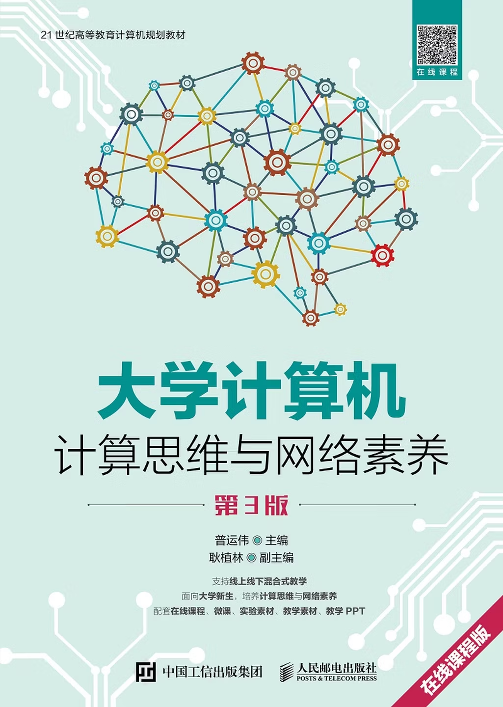
计算思维与信息基础
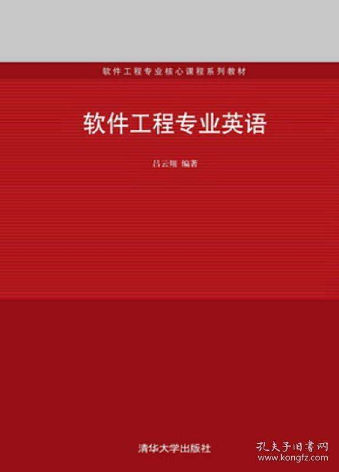
计算机专业英语
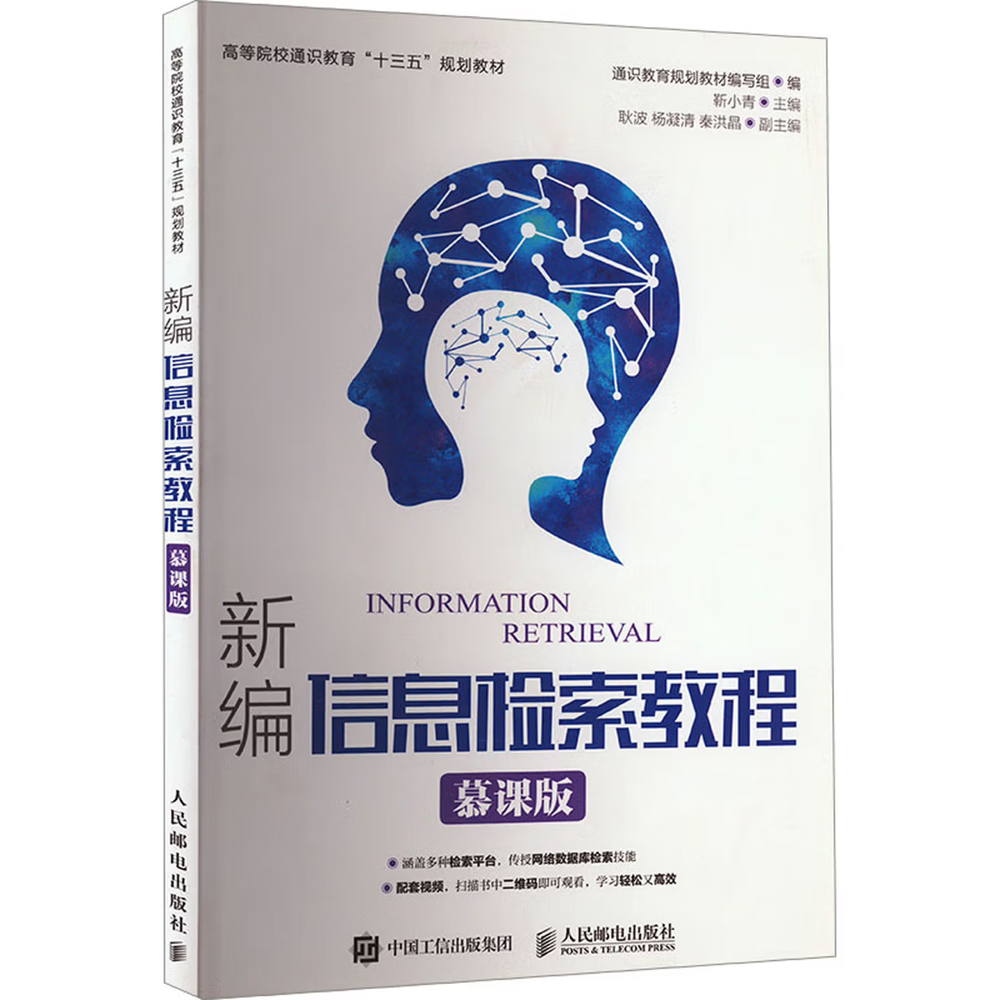
信息检索
Research Team
[TJU]
[TJU] 宋长皓，2024级，博士研究生，研究方向：情感推理模型（协助张鹏老师指导）。
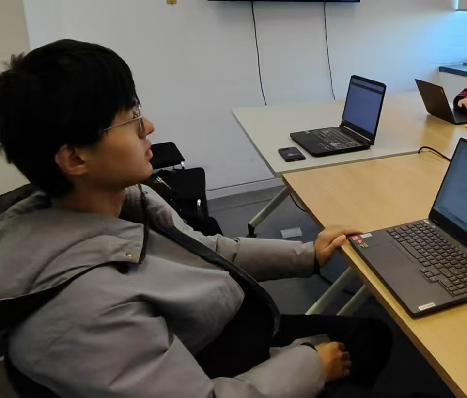
[TJU] 郁军号，2025级，研究生，研究方向：多模态大模型构建。
[TJU] 李昊坤，2025级，研究生，研究方向：大模型的认知能力评测（协助张鹏老师指导）。
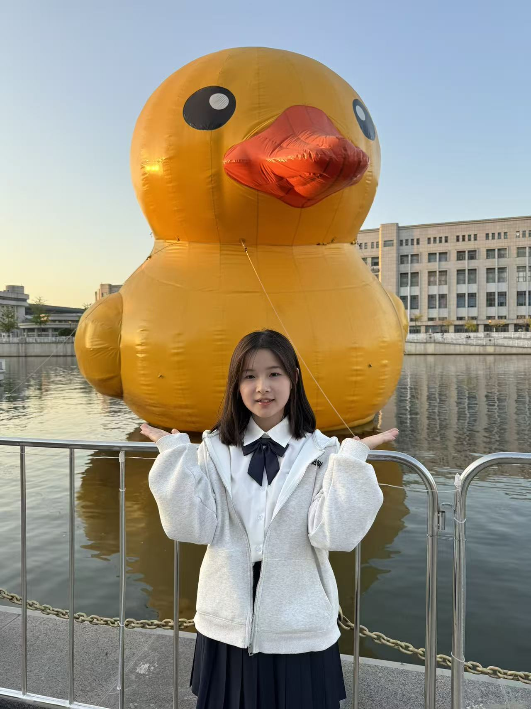
[TJU] 张佩怡，2024级，研究生，研究方向：大模型的教育价值对齐（协助王博老师指导）。
[PolyU]
[ZZULI]
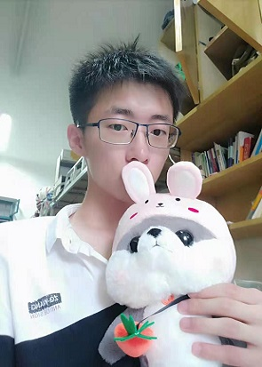
[ZZULI] 俞洋，2020级，已毕业；去向：兰州大学读博。研究方向：多模态对话情感分析。
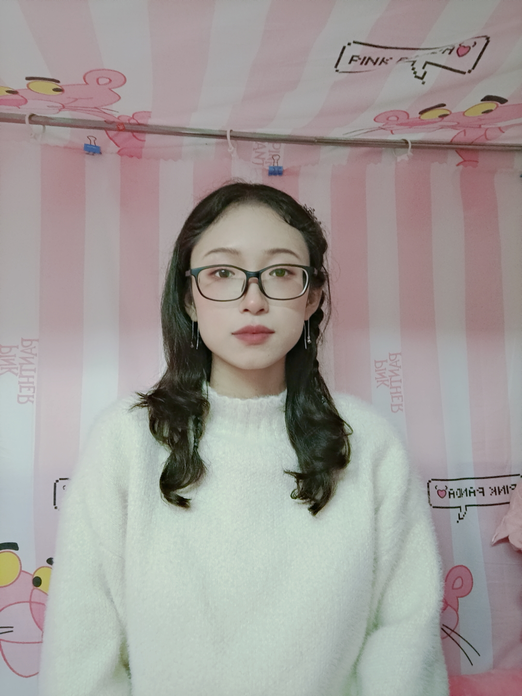
[ZZULI] 和玉，2021级，已毕业；去向：郑州银行软件开发部。研究方向：讽刺、欲望识别。
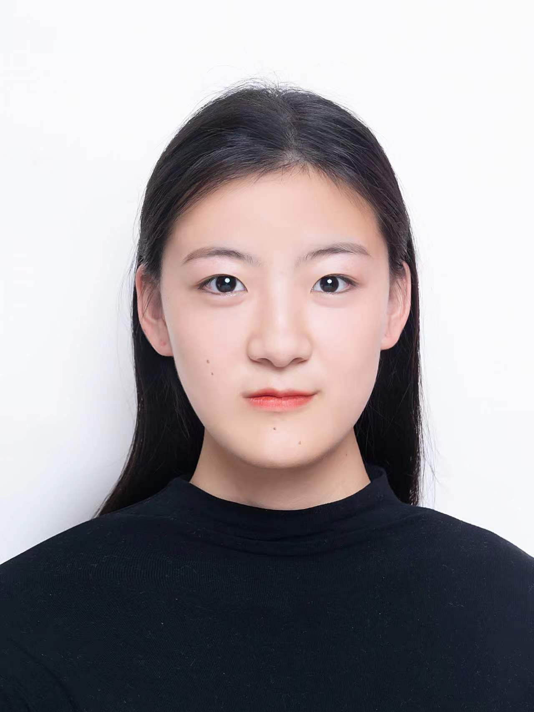
[ZZULI] 王梦遥，2022级，已毕业；去向：重庆大学读博。研究方向：多模态讽刺检测。

[ZZULI] 刘祈蒙，2023级。研究方向：情感大语言模型、思维链。
[ZZULI] 邹春旺，2023级。研究方向：讽刺理解大语言模型。
[BIT]
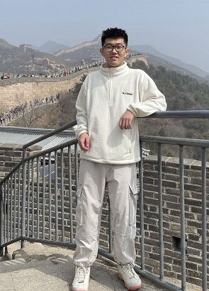
[BIT] 刘耀琛，2020级，已毕业。研究方向：多模态情感分析、量子认知。

[BIT] 马放，2020级，已毕业。研究方向：对话情感分析、偏见检测。
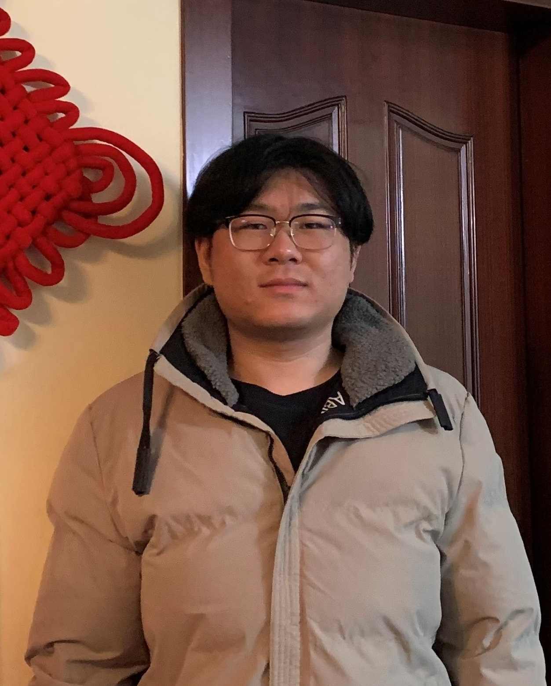
[BIT] 贾奥，2022级，已毕业，中央办公厅。研究方向：多模态欲望识别、多任务学习。
Contact
lixiang[AT]qlu.edu.cn
National Supercomputer Center, Jinan, China
(+86)155贰贰伍捌叁陆叁捌